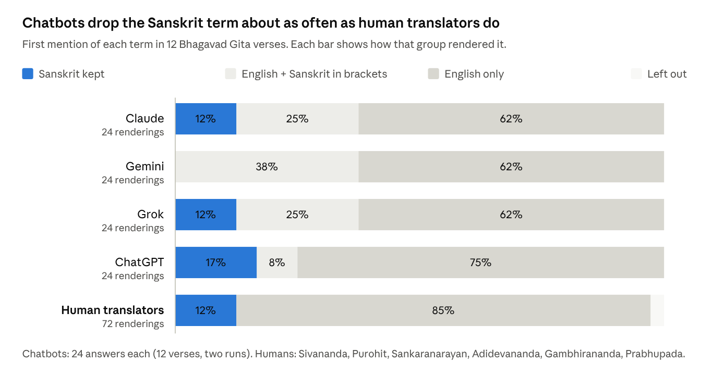

Do AI Chatbots Flatten Sanskrit Non-Translatables?
Four chatbots, twelve Sanskrit terms and 192 answers, set beside six published English translations of the Bhagavad Gita.
This page gives the results. The full study plan, written before any answer was collected, is on a separate page.
The Short Answer
This study asked four AI chatbots to translate 12 Sanskrit terms from the book Sanskrit Non-Translatables by Rajiv Malhotra and Satyanarayana Dasa Babaji (2020). Each term was asked about in two ways, first on its own and then inside a verse of the Bhagavad Gita. All 24 questions were sent to all four chatbots on two different days, which gave 192 answers.
When the chatbots translated a verse, they dropped the Sanskrit term and put an English word in its place in 86 of 96 answers (90%). In 57 of these 86 answers (66%), the chatbots used the same English word that the book rejects for that term. Hence, the first two hypotheses are supported.
However, the chatbots dropped the Sanskrit term about as often as human translators did. Six published English translations of the same verses dropped the term in 63 of 72 renderings (88%), which is almost the same as the chatbots’ 90%. A difference this small could easily come from chance alone. In other words, the chatbots did not start this habit, since human translators were already leaving the Sanskrit term out long before chatbots existed. The chatbots learned their English from such translations, and in a few answers Grok repeated one of them word for word.
The third hypothesis was not supported. I expected a chatbot to say that no English word fits the term when asked about the word alone. I then expected the same chatbot to use an English word anyway inside the verse. But the chatbots rarely said that no English word fits in the first place (11 of 96 answers). Only Gemini showed the pattern I expected, in 5 of its 24 answers about the word alone.
What Was Tested
Twelve terms were drawn at random from Sanskrit Non-Translatables. Only terms that the Bhagavad Gita also uses, in the sense the book discusses, could be drawn (35 of the book’s 54 terms). The book discusses its terms across nine chapters (each one on a different area of thought, such as metaphysics, the mind, yoga, the shastras, dharma and kavya). To make sure every chapter was covered, one term was drawn from each chapter first, and then three more terms were drawn from the rest. Each term was asked about in two ways:
- Word alone: “Translate the Sanskrit word {term} ({Devanagari}) into English.”
- Word in a verse: “Translate this verse from the Bhagavad Gita ({chapter.verse}) into English.”, followed by the verse in Devanagari and in IAST.
Every prompt was sent in a new chat, with saved memory turned off, and with web search turned off wherever the app allowed it. The verse answers were then compared with six published English translations of the same verses.
Four hypotheses were written down before any answer was collected:
- H1. When a chatbot translates a verse, it will usually drop the Sanskrit term, either by putting an English word in its place or by leaving the term out. I expect this in more than half of the verse answers. Suppose the share of such answers is above half, and the lower end of its 95% confidence interval (Wilson method) is also above half. In that case, H1 is supported. If not, H1 fails.
- H2. When a chatbot does put an English word in place of the term, that word will usually be the one the book rejects. Suppose at least half of these English words are the same word the book rejects for that term. In that case, H2 is supported. If not, H2 fails.
- H3. A chatbot will often admit that no English word can capture a term, and then use an English word for it anyway when it translates a verse. When asked about the word alone, it will often say that no single English word fits. However, when the same word appears inside the verse, the same chatbot will keep the Sanskrit term less often. To test this, I pair the two answers each chatbot gives for the same term in the same run, which makes 96 pairs, and compare them with an exact McNemar test (two-sided, α = 0.05). Suppose the test shows that the chatbots flag the gap significantly more often than they keep the term. In that case, H3 is supported. If not, H3 fails.
- H4. The chatbots and the human translators will keep the Sanskrit term at different rates. I make no prediction about which side keeps it more often, and hence this test is exploratory. I compare the two rates with a two-sided Fisher’s exact test.
The study also looked at what the chatbots say about a word on its own, and at how much their answers change when the same prompt is sent again on another day.
Each answer was coded on a fixed set of codes. For a verse answer, V1 records whether the term is kept or dropped, V2 the English word used, V3 whether it is the book’s word, and V4 whether a note explains the term. For a word-alone answer, W1 records the first English word, W2 whether it is the book’s word, W3 whether the answer says that English falls short, W4 how many of the term’s senses it covers, and W5 whether it ties a sense to a named school, text or period.
What Was Collected
| Chatbot | Model name shown in the app | Plan | Chat mode | Answers |
|---|---|---|---|---|
| Claude | Opus 5.5 Medium | Paid | Temporary chat | 48 |
| Gemini | Argon | Paid | Temporary chat | 48 |
| Grok | Grok 4.7 Fast | Free | Temporary chat | 48 |
| ChatGPT | GPT-5.6 Luna | Free | Temporary chat | 48 |
Run 1 took place on 23 October 2026, from 9:15 to 10:21 in the evening (New York time). Run 2 took place on 26 October, from 7:15 in the evening to 12:50 after midnight. Both runs were done on an iPhone 16 Plus, about 70 hours apart, and each app showed the same model name for all 48 of its answers.
The answers themselves were complete and consistent. No prompt changed during the study, and all 192 answers carry the same prompt code to show it. Also, no answer was empty, cut off or an error message.
Once the answers were collected, all 192 of them were coded blind. In other words, only the term, the kind of prompt and the answer itself were seen and nothing else. The names of the chatbots were hidden, and the answers were shuffled so that their order gave nothing away. These codes were saved and locked before anyone checked which chatbot gave which answer. After that, 58 of the answers were coded a second time, again blind, to check the first codes. Where the two disagreed, the answer was read again and the codebook decided (see Checking the Codes). Every number below uses these final codes.
How to read the numbers
Each result is written as a count, a percentage and a range. For example 86/96 = 90% (82% to 94%). The range is the 95% confidence interval. Suppose the same study were repeated with far more answers. In that case, the true rate would very likely fall inside this range. The ranges here are wide because each chatbot gave only 24 answers of each kind, and hence small differences between chatbots should not be read as real.
H1: Do the Chatbots Drop the Sanskrit Term Inside a Verse?
| Chatbot | Dropped the term | Range |
|---|---|---|
| Claude | 21/24 = 88% | 69% to 96% |
| Gemini | 24/24 = 100% | 86% to 100% |
| Grok | 21/24 = 88% | 69% to 96% |
| ChatGPT | 20/24 = 83% | 64% to 93% |
| All four | 86/96 = 90% | 82% to 94% |
The lower end, 82%, is well above half. Hence, H1 is supported.
One case the codebook did not foresee is the bracket. In 23 answers the chatbot wrote the English word and then added the Sanskrit term in brackets, for example “the path of action (karma-yoga)”. These were coded as English, because the English word is the one that carries the sentence. Counted the other way, as if the term were kept, the share that drops it is still 63/96 = 66% (56% to 74%). Hence, H1 holds either way.
The 10 answers that did keep the term came from only three terms. Six were samādhi (Claude, Grok and ChatGPT, in both runs), two were māyā (ChatGPT, both runs) and two were guṇa (Claude and Grok, Run 2 only). Gemini never kept a term, even though it explained the term in a note in all 24 of its verse answers.
H2: Is the English Word the One the Book Rejects?
| Chatbot | Matched the book’s word | Range |
|---|---|---|
| Claude | 15/21 = 71% | 50% to 86% |
| Gemini | 15/24 = 62% | 43% to 79% |
| Grok | 13/21 = 62% | 41% to 79% |
| ChatGPT | 14/20 = 70% | 48% to 85% |
| All four | 57/86 = 66% | 56% to 75% |
In all, 57 of the 86 English words (66%) were the word the book rejects, which is well above the half that H2 needed. Hence, H2 is supported. However, this overall number hides a big difference between the terms. For six terms (prakṛti, asura, ahiṃsā, śāstra, sevā and karma-yoga), the chatbots used the word the book rejects almost every time. It appeared in all 8 answers for the first five terms, and in 7 of the 8 answers for karma-yoga. For four other terms, they never used it. For śabda they wrote “sound”, for buddhi “intellect” and for kāma “desire”, whereas for samādhi they mostly kept the Sanskrit term.
These close words were left out on purpose. Before any data was collected, “sound”, “intellect” and “desire” were listed as close words that do not count as the book’s word, so that the test would stay strict. For the same reason, “path of selfless action” was not counted as a match for karma-yoga. Even if it were counted, the result would only move from 57 to 58 of 86.
H3: Do the Chatbots Admit the Gap and Then Ignore It?
For this test, the two answers a chatbot gave for the same term in the same run are put side by side, which makes 96 pairs. The question is whether the chatbots say “no English word fits” more often than they actually keep the Sanskrit term.
| Row | Kept the term in the verse | Dropped it in the verse |
|---|---|---|
| Said no English word fits | 5 | 6 |
| Did not say so | 5 | 80 |
The test (an exact McNemar test) looks only at the two cells where the answers disagree, 6 and 5. These are almost equal, and the test gives p = 1.0, which means there is no difference at all. Hence, H3 is not supported.
The reason is that the chatbots rarely said it. When asked about the word alone, only one answer gave a single English word as if it were enough (1 of 96). However, 84 of 96 answers listed several English words without saying that none of them is exact, and only 11 said plainly that no English word fits, or that the Sanskrit term is best kept. In other words, the chatbots hedge by saying “it depends on the context”, but they rarely tell the reader to keep the Sanskrit word.
Gemini is the one exception. It said plainly that no English word fits in 5 of its 24 word-alone answers (guṇa, samādhi twice, sevā and śāstra), and then dropped the term in the matching verse every single time. Grok did this once (asura, Run 1). Claude, on the other hand, never said it (0 of 24), and yet kept samādhi in both runs and guṇa once.
H4: The Chatbots Against Human Translators

The chatbots kept the Sanskrit term in 10 of 96 verse answers (10%, range 6% to 18%), whereas the six human translators kept it in 9 of 72 renderings (12%, range 7% to 22%). A Fisher’s exact test gives p = 0.81, which means there is no real difference. This test was marked as exploratory from the start, since the 96 chatbot answers are not independent of each other.
The human figure also rests mostly on one translator. Adidevananda, who translates Rāmānuja’s commentary, accounts for five of the seven full retentions.
The two groups do seem to differ in one way, which is the English word they pick. When they used English, the chatbots chose the word the book rejects in 57 of 86 answers (66%), whereas the human translators chose it in 30 of 61 renderings (49%). However, this comparison was not planned in advance. Its test is also only borderline (p = 0.04), and the chatbot answers are not fully independent of each other. Hence, this difference is a lead worth checking further, rather than a firm result. Even so, two terms show the difference clearly with ahiṃsā being the first. All eight chatbot answers wrote “non-violence”, whereas five of the six translators wrote “harmlessness” or “non-injury”. Similarly, all eight chatbot answers rendered prakṛti as “nature” or “material nature”, whereas only three of the six translators did.
The Word on Its Own
When asked about the word alone, the first English word a chatbot gave was the book’s rejected word in 46 of 96 answers (48%, range 38% to 58%). Every answer then went on to list more than one sense. On average, an answer covered 67% of the sense groups drawn from Monier-Williams and the book, and 58 of 96 answers (60%) said that the meaning differs by school, text or period. Only one factual error was found in all 96 answers: Grok explained the ending of śāstra as if it meant “that which has been instructed”, whereas the suffix -tra marks the means of instruction.
However, some senses never came up at all, and these were the very senses the book argues for most. Not one of the 8 answers on ahiṃsā said that it is not absolute and allows force in defence of dharma, and not one set it apart from the modern political idea of “non-violence”. Not one of the 8 answers on karma-yoga said that the action is offered to Bhagavān. Not one of the 8 answers on asura mentioned the human type that the Gita itself describes in chapter 16, which is the same verse used in this study.
The word-alone answers and the verse answers also differ in an interesting way. Asked about śāstra alone, all 8 answers began with “treatise”, whereas inside the verse all 8 wrote “scripture”. Asked about karma-yoga alone, all 8 answers began with “yoga of action” or “discipline of action”, whereas inside the verse 7 of 8 wrote “path of action”. In both cases, the verse pulled the chatbot toward the book’s rejected word. A likely reason is that the word-alone question gets a dictionary answer, whereas the verse gets the answer found in existing English translations of the Gita.
Inside the verse, most answers did add a note explaining the term (72 of 96, or 75%). Grok was the exception, with a note in only 7 of its 24 verse answers.
The Same Question on Two Days
The main choice, whether to keep or drop the term in a verse, hardly changed between the two runs. It was the same in 46 of 48 pairs (Cohen’s κ = 0.78). The first English word given for the word-alone was also the same in 43 of 48 pairs. Cohen’s κ measures agreement beyond what chance alone would give, where 1 is perfect agreement and 0 is no better than chance.
One thing did change more often between the two days, which is whether a chatbot said that no English word fits. This stayed the same in 42 of the 48 pairs (κ = 0.44), and 3 of the 6 changes came from Gemini. Even so, the main results held on both days, and hence they do not depend on the answers of a single day.
Term by Term
The verse columns show the first mention of the term. Each chatbot cell counts 8 answers (four chatbots, two runs), and each human cell counts 6 renderings.
| Term | Book rejects | Chatbots, inside the verse | Book’s word used | Human translators, inside the verse | Chatbots, word alone (first word) |
|---|---|---|---|---|---|
| māyā | illusion | illusion 4, energy 2, kept 2 | 4/8 | illusion 3, kept 2, energy 1 | illusion 8 |
| prakṛti | nature | material nature 5, nature 3 | 8/8 | nature 3, kept 2, left out 1 | nature 8 |
| śabda | word | sound 8 | 0/8 | sound 6 | sound 8 |
| asura | demon | demonic 6, demoniac 2 | 8/8 | demoniac(al) 5, godless 1 | demon 7, titan 1 |
| buddhi | intelligence | intellect 6, understanding 1, mind 1 | 0/8 | five different words, left out 1 | intellect 8 |
| ahiṃsā | non-violence | non-violence 8 | 8/8 | harmlessness 3, non-injury 2, nonviolence 1 | non-violence 8 |
| samādhi | trance | kept 6, meditation 1, higher consciousness 1 | 0/8 | six different phrases | meditative absorption 6, concentration 2 |
| karma-yoga | path of action | path of action 7, path of selfless action 1 | 7/8 | path of action 2, Yoga of action 2, kept 1, devotional service 1 | yoga of action 6, discipline of action 2 |
| guṇa | quality or mode | qualities 5, modes 1, kept 2 | 6/8 | qualities 3, modes 1, strands 1, kept 1 | quality 7, thread 1 |
| śāstra | scripture | scripture(s) 8 | 8/8 | scripture(s) 5, kept 1 | treatise 8 |
| sevā | service | service 6, selfless service 1, devoted service 1 | 8/8 | service or serving 6 | service 6, selfless service 2 |
| kāma | lust | desire 8 | 0/8 | desire 5, lust 1 | desire 8 |
A Finding I Did Not Plan For: Copied Translations
While checking the answers, I noticed that some of them looked familiar. Hence, every verse answer was compared with the six human translations, and the longest stretch of identical text was measured (letters only, ignoring punctuation and capitals).
Four Grok answers share more than 100 characters with A. C. Bhaktivedanta Swami Prabhupada’s Bhagavad-gītā As It Is: buddhi in Run 1 (162 characters), kāma in Run 1 (150), and sevā in both runs (206 each). In the sevā answer from Run 1, Grok gave Prabhupada’s words as its own translation, with no credit. In the other three, it quoted them as a second rendering, and named the book in two of them. Grok’s main translation of the māyā verse in Run 1 also reuses Prabhupada’s phrase “divine energy of Mine, consisting of the three modes of material nature” without credit. For comparison, the longest shared stretch for any other chatbot was 85 characters (Gemini and ChatGPT) and for Claude 66, which is the kind of overlap that any two close translations of the same verse would share.
All of Grok’s copying answers showed web sources, which suggests that Grok looked the verse up and repeated what it found. This matters because Prabhupada’s translation comes from one tradition (Gauḍīya Vaiṣṇavism) and often paraphrases the verse instead of translating it. Hence, a reader who asks a chatbot for “a translation” cannot tell whose translation they are getting or whose theology comes with it. This finding is exploratory. The 100-character cut-off was chosen after looking at the data. The comparison also covers only the six translations in the dataset.
Notes on Method
- Rules added during coding. Some answers did not fit the codebook neatly, and hence 16 new rules were written down during coding. Five of these rules affect the results. First, an English word with the Sanskrit term in brackets was coded as English (H1 is given both ways above). Second, when an answer gave more than one translation, only the first one was coded. Third, a phrase counted as the book’s word if its main word matched, so “material nature” matches “nature”. Finally, “path of selfless action” was not counted as the book’s word for karma-yoga, whereas “selfless service” was counted for sevā. All 16 rules are published with the codebook.
- Grok showed web sources. Search was turned off wherever the apps allowed it, and yet Grok showed web sources in 41 of its 48 answer, while none of the others did. But did the web sources change Grok’s answers? Grok dropped the term in 18 of its 20 verse answers that showed sources, and in 3 of the 4 that did not. Four answers are far too few to compare, and hence this question stays open.
Checking the Codes
A second check was run on the codes themselves. For this check, a random 58 of the 192 answers (30%) were coded again, blind, just as in the first round. This second round used only the codebook and the 16 added rules. During this round, the first codes and the list of which chatbot gave each answer were both locked away, so neither could be seen. The new codes were then compared with the frozen first codes.
| Code | What it records | Answers | Same code | Cohen’s κ |
|---|---|---|---|---|
| V1 | Term kept or dropped in the verse | 32 | 32 (100%) | 1.00 |
| V2 | English word used in the verse | 32 | 31 (97%) | not used |
| V3 | Is it the book’s word? (verse) | 32 | 32 (100%) | 1.00 |
| V4 | Note explaining the term (verse) | 32 | 31 (97%) | 0.91 |
| W1 | First English word (word alone) | 26 | 24 (92%) | not used |
| W2 | Is it the book’s word? (word alone) | 26 | 26 (100%) | 1.00 |
| W3 | Says that English falls short | 26 | 25 (96%) | 0.78 |
| W5 | Ties a sense to a school, text or period | 26 | 25 (96%) | 0.91 |
Every row shows how often the two rounds gave the same code. Cohen’s κ goes one step further, as it corrects for the agreement that chance alone would give (1 means perfect agreement, and 0 means no better than chance). However, κ only works for codes with a fixed set of choices. V2 and W1 are English words written in by hand, and hence for them only the exact match is shown.
W4 counts how many of a term’s senses an answer mentions. The two rounds gave the same senses in 25 of the 26 word-alone answers, and hence their W4 scores were almost identical (on average, less than one percentage point apart). Hence, the two passes agreed on almost everything. On the two codes that decide H1 and H2, V1 and V3, they agreed on all 32 verse answers.
The two rounds differed on 7 codes. Three of these were only about how a word was written down. In two karma-yoga answers the first round wrote “yoga of action” and the second round wrote the whole phrase “yoga (discipline or path) of action”. Both rounds still agreed that it is not the book’s word. In one samādhi answer, the chatbot kept the Sanskrit word itself, and both rounds agreed on that. The only difference is that the first round also wrote “samadhi” in the box meant for an English word. The second round left that box empty, as the codebook says to do when no English word is used. The other 4 differences were real disagreements in 3 answers. Each one was settled by reading the answer again against the codebook:
- A sevā answer (word alone). The answer gave just one English word, “service”, and then explained it. The first round read it as an answer that offers several English words, and also as one that ties the meaning to particular traditions. The second round read it as neither. The second reading was kept, for two reasons. First, the answer really gives only one English word. Second, it names three religions (Hindu, Sikh and Buddhist) together with the same meaning for all three, and the codebook counts traditions only when the meaning changes from one to another.
- A śabda answer (verse). The answer did not explain śabda by name. However, its note on the word kha said that sound is the defining quality of ether (ākāśa). The first round did not count this as explaining the term, whereas the second round did. The second reading was kept, because “the quality of ether” is a known technical sense of śabda, even though the note never uses the word.
- A buddhi answer (word alone). The answer said that the word comes from the root budh, “to awaken”. The first round took this as the sense “awakened wisdom”, whereas the second round did not. The second reading was kept, because saying where a word comes from is not the same as using it in that sense.
These three fixes did not change the result of any of the four hypotheses. However, they did change four of the other counts in this report by one answer each. These are listed below, and the report above already uses the new counts:
- One word-alone answer now counts as giving a single English word with no caveat (1 of 96, where it was 0).
- Answers that tie a meaning to a school, text or period went from 59 to 58 of 96.
- Verse answers with a note explaining the term went from 71 to 72 of 96.
- When the same question was asked on two days, the choice of whether to say “no English word fits” stayed the same in 42 of 48 pairs, where it was 43.
The first codes, the second round and the final codes are all published.
This check shows that the coding is consistent, whereas whether it is correct is a question for an independent coder. The raw answers are published so that anyone can code them again.
Limits of These Results
- The study looked at only 12 terms, and only in verses from the Bhagavad Gita. Each question was also asked in just one fixed wording. Hence, the results show a clear pattern for these 12 terms, but they cannot give an exact rate for Sanskrit as a whole.
- The answers are not fully separate from each other. Each chatbot answered every prompt twice, and all four chatbots probably learned from many of the same English translations. The tests do not fully account for this, and hence the ranges in this report may be a little too narrow.
- The results describe these versions of the apps on these dates only. The companies can change their models at any time, and the free and paid plans may not even use the same model.
- One of the chatbots tested, Claude, also helped with the coding. The chatbot names were hidden, but the style of an answer can still give away which chatbot wrote it (for example, Grok’s bold headings). The raw answers are published so that anyone can code them again and check.
- The yardsticks are not neutral. The list of words the book rejects reflects the authors’ own position. The strict matching can also turn on a small difference, such as “intellect” against “intelligence” for buddhi.
- The six human translations are simply the ones the dataset contains, and they were not chosen for this study. One of them, by Prabhupada, is also the source that Grok copied, and this makes the chatbots and the humans look a little more alike than they otherwise would.
What This Means
The chatbots in this study did not invent a new way to flatten Sanskrit, but rather repeat the English words that human translators chose long ago. The difference is that a chatbot repeats these words within seconds to anyone who asks, and gives almost everyone the same answer. The answers also show that the chatbots know more than they use. When asked about a word alone, they list several meanings and even name schools and texts. Inside a verse, however, they drop almost all of that and use one familiar English word. Some meanings did not appear anywhere at all, not even in the word-alone answers. These were the very meanings the book argues for most, such as ahiṃsā not being absolute, or karma-yoga being action offered to Bhagavān.
Hence, the question this study raises is not only about AI. A chatbot can only pass on what its sources say, and so whatever is fixed in the sources (in translations, dictionaries and textbooks) is what will eventually reach the people asking chatbots what their own words mean.
Files Published With This Report
- codebook.md, with every code, the word the book rejects for each term, the sense groups used for W4, and the 16 added coding rules.
- materials.json and schedule_and_prompts.json, the locked prompts and the order they were sent in.
- select_terms.py, the script that drew the 12 terms.
- All 192 raw answers, with the two run setups.
- The blind coding sheet, the frozen first codes, the 16 added coding rules, the second pass with its notes, and the settled codes with the reason for each change.
- human_baseline_codes.csv, the codes for the 72 human renderings.
- analyze.py, extras.py, reuse.py and agreement.py, which produce every number in this report.
- The study plan, archived on OSF and registered retrospectively on 27 October 2026: osf.io/rhj2k. It is also on this site.